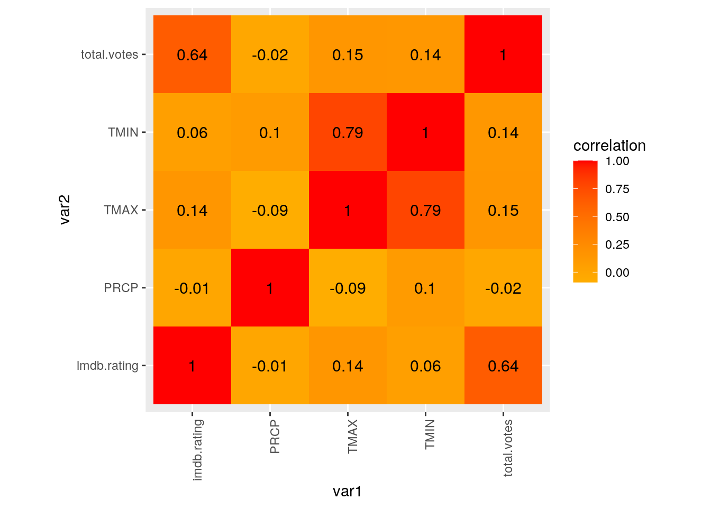
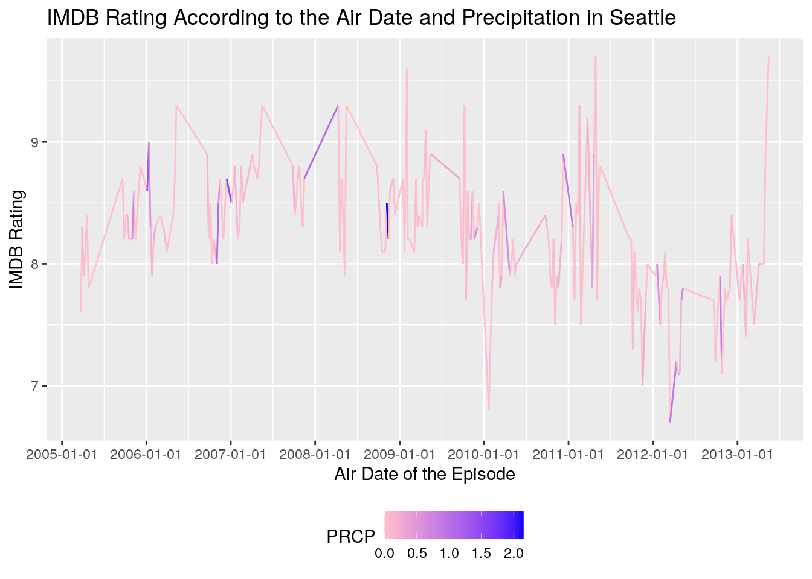
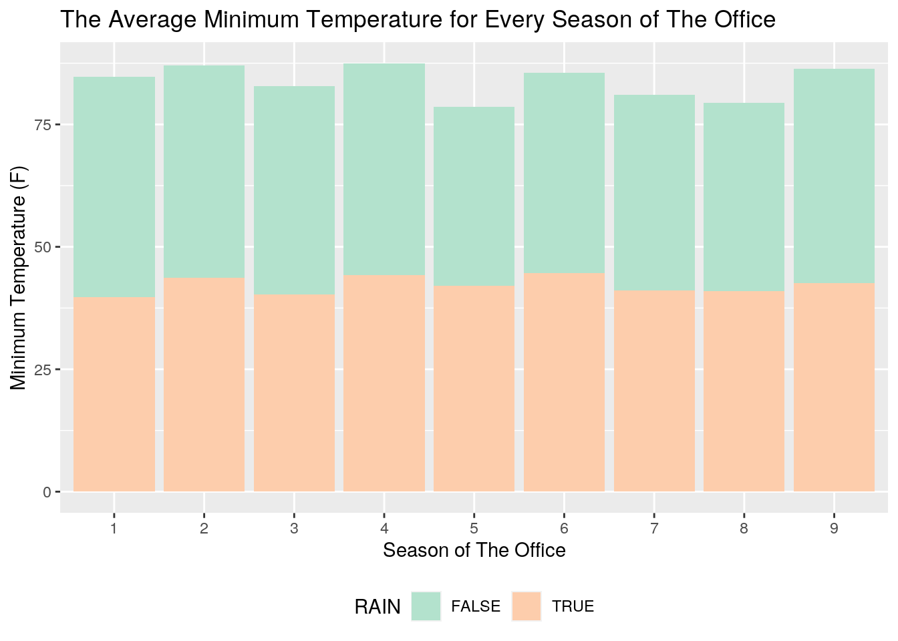

January 1, 0001
Introduction
The office_ratings dataset gives the season and episode number, title, IMDB rating, total votes by users, and the air date of each episode on the show. The seattle_weather data gives the precipitation (in inches), the maximum and minimum temperature and whether it rained or not in Seattle on a particular date since 1948 to 2017. There are 188 observations in the office_ratings dataset and 25551 observations in the seattle_weather dataset.
I acquired the office_ratings dataset through github and I found the seattle_weather dataset on kaggle.com. I am interested in the office_ratings dataset because it's one of my favorite shows and I thought that this data might be interesting for me to work with. I don't expect there to be any real correlation between the two datasets because neither the weather nor the show's ratings would depend on the other.
Datasets and Joining
library(tidyverse)
office_ratings <- readr::read_csv("https://raw.githubusercontent.com/rfordatascience/tidytuesday/master/data/2020/2020-03-17/office_ratings.csv")
seattleWeather_1948_2017 <- read_csv("https://raw.githubusercontent.com/russellromney/seattle-weather/master/seattleWeather_1948-2017.csv")
seattle_weather <- seattleWeather_1948_2017
head(office_ratings)## # A tibble: 6 x 6
## season episode title imdb_rating total_votes air_date
## <dbl> <dbl> <chr> <dbl> <dbl> <date>
## 1 1 1 Pilot 7.6 3706 2005-03-24
## 2 1 2 Diversity Day 8.3 3566 2005-03-29
## 3 1 3 Health Care 7.9 2983 2005-04-05
## 4 1 4 The Alliance 8.1 2886 2005-04-12
## 5 1 5 Basketball 8.4 3179 2005-04-19
## 6 1 6 Hot Girl 7.8 2852 2005-04-26head(seattle_weather)## # A tibble: 6 x 5
## DATE PRCP TMAX TMIN RAIN
## <date> <dbl> <dbl> <dbl> <lgl>
## 1 1948-01-01 0.47 51 42 TRUE
## 2 1948-01-02 0.59 45 36 TRUE
## 3 1948-01-03 0.42 45 35 TRUE
## 4 1948-01-04 0.31 45 34 TRUE
## 5 1948-01-05 0.17 45 32 TRUE
## 6 1948-01-06 0.44 48 39 TRUEfulldata <- office_ratings %>% left_join(seattle_weather, by = c(air_date = "DATE"))
25551 - 188## [1] 25363head(fulldata)## # A tibble: 6 x 10
## season episode title imdb_rating total_votes air_date PRCP TMAX TMIN
## <dbl> <dbl> <chr> <dbl> <dbl> <date> <dbl> <dbl> <dbl>
## 1 1 1 Pilot 7.6 3706 2005-03-24 0 54 41
## 2 1 2 Dive… 8.3 3566 2005-03-29 0.13 50 41
## 3 1 3 Heal… 7.9 2983 2005-04-05 0.07 58 42
## 4 1 4 The … 8.1 2886 2005-04-12 0.06 49 36
## 5 1 5 Bask… 8.4 3179 2005-04-19 0 62 40
## 6 1 6 Hot … 7.8 2852 2005-04-26 0 65 54
## # … with 1 more variable: RAIN <lgl>After doing a left join, all the dates that were in the seattle_weather dataset that do not have a match in the office_ratings dataset are dropped, which was a total of 25363 observations. I chose to do a left join in particular because I want to be able to find the weather in Seattle for everyday that an episode of The Office aired. If I did a full join, there would be many rows with NAs that just included the weather on that day when no episode was aired. I don't anticipate there to be too many issues with the data that was dropped. If anything, I lost data that would create a more smooth trend of the weather if it were graphed, rather than random dates here and there.
Summary Statistics
fulldata <- fulldata %>% mutate(freezing = ifelse(TMIN < 32,
"yes", "no")) %>% rename(imdb.rating = imdb_rating) %>% rename(total.votes = total_votes) %>%
rename(air.date = air_date)
summary_stats <- fulldata %>% group_by(season) %>% select(imdb.rating,
total.votes, PRCP, TMAX, TMIN) %>% summarize_all(c(mean = mean,
sd = sd, min = min, max = max, median = median, var = var)) %>%
pivot_longer(-season) %>% separate(name, into = c("var",
"stat"), sep = "_") %>% pivot_wider(names_from = "season",
values_from = "value") %>% rename(season1 = "1", season2 = "2",
season3 = "3", season4 = "4", season5 = "5", season6 = "6",
season7 = "7", season8 = "8", season9 = "9")
fulldata %>% filter(RAIN == T, freezing == "yes") %>% arrange(-PRCP)## # A tibble: 3 x 11
## season episode title imdb.rating total.votes air.date PRCP TMAX TMIN
## <dbl> <dbl> <chr> <dbl> <dbl> <date> <dbl> <dbl> <dbl>
## 1 8 12 Pool… 8 1612 2012-01-19 0.6 30 27
## 2 3 11 Back… 8.5 2255 2007-01-04 0.15 42 30
## 3 9 10 Lice 7.7 1470 2013-01-10 0.01 38 31
## # … with 2 more variables: RAIN <lgl>, freezing <chr>fulldata <- fulldata %>% transform(season = as.character(season),
episode = as.character(episode), RAIN = as.character(RAIN))
fulldata %>% select_if(is.numeric) %>% cor(use = "pair") %>%
round(4)## imdb.rating total.votes PRCP TMAX TMIN
## imdb.rating 1.0000 0.6430 -0.0109 0.1434 0.0623
## total.votes 0.6430 1.0000 -0.0218 0.1457 0.1378
## PRCP -0.0109 -0.0218 1.0000 -0.0904 0.0979
## TMAX 0.1434 0.1457 -0.0904 1.0000 0.7864
## TMIN 0.0623 0.1378 0.0979 0.7864 1.0000fulldata %>% group_by(season) %>% summarize(imdb_mean = mean(imdb.rating),
PRCP_max = max(PRCP))## # A tibble: 9 x 3
## season imdb_mean PRCP_max
## <chr> <dbl> <dbl>
## 1 1 8.02 0.13
## 2 2 8.44 1.33
## 3 3 8.57 1.55
## 4 4 8.6 1.09
## 5 5 8.49 2.15
## 6 6 8.22 0.7
## 7 7 8.32 0.89
## 8 8 7.67 0.94
## 9 9 7.96 0.82fulldata %>% group_by(RAIN, freezing) %>% summarize(mean_tempmin = mean(TMIN))## # A tibble: 4 x 3
## # Groups: RAIN [2]
## RAIN freezing mean_tempmin
## <chr> <chr> <dbl>
## 1 FALSE no 42.9
## 2 FALSE yes 26.9
## 3 TRUE no 42.7
## 4 TRUE yes 29.3Visualizations
cor_dat <- fulldata %>% select_if(is.numeric) %>% cor(use = "pair")
cor_dat %>% as.data.frame %>% rownames_to_column("var1") %>%
pivot_longer(-1, "var2", values_to = "correlation") %>% ggplot(aes(var1,
var2, fill = correlation)) + geom_tile() + scale_fill_gradient2(low = "yellow",
mid = "orange", high = "red") + geom_text(aes(label = round(correlation,
2)), color = "black", size = 4) + theme(axis.text.x = element_text(angle = 90,
hjust = 1)) + coord_fixed()
fulldata %>% ggplot(aes(air.date, imdb.rating, color = PRCP)) +
geom_line() + xlab("Air Date of the Episode") + ylab("IMDB Rating") +
scale_color_gradient(low = "pink", high = "blue") + theme(legend.position = "bottom") +
ggtitle("IMDB Rating According to the Air Date and Precipitation in Seattle") +
scale_x_date(date_breaks = "1 year")
fulldata %>% ggplot(aes(x = season, fill = RAIN)) + geom_bar(aes(y = TMIN),
stat = "summary", fun = mean) + xlab("Season of The Office") +
ylab("Minimum Temperature (F)") + theme(legend.position = "bottom") +
ggtitle("The Average Minimum Temperature for Every Season of The Office") +
scale_fill_brewer(palette = "Pastel2") The correlation heatmap gives a very easy visual of which numeric variables are more correlated than the others. I have made it so the higher correlations are red while the lower correlations are yellow. So of course the correlations for the same variable (ex. imdb.rating to imdb.rating) is a 1. The minimum and maximum tempuratures are highly correlated with a 0.79 correlation. You can also see that the total votes and the imdb ratings have a pretty high correlation of 0.64. Surprsingly, there is a low correlation between the precipitation and the maximum temperature of -0.09.
In the second plot, the IMDB rating of each episode of The Office is graphed against the airdate of that episode. The precipitation level of each day in Seattle is graphed as the color. In the plot, you can see that in a general trend, as the dates go by, the ratings of the episodes declines. The precipitation levels seem to be low for the most part of the years, however it does increase every now and then but there doesn't seem to be any correlation to the air dates or the IMDB ratings of the episodes.
In the last plot, the average mimimum temperature in Seattle is graphed for each season of The Office. The fill of the bars represents the frequency of whether it rained or not. The lowest minimum temperature is given for season 5 and the greatest minimum temperature is during season 4. The frequency of whether it rained or not is about 50% for each season. There is no/low correlation betwen the average minimum temperatures and the seasons of The Office.
K-means and PAM Clustering or PCA
library(cluster)
dataframe <- fulldata %>% select(imdb.rating, total.votes, PRCP) %>%
scale %>% as.data.frame
sil_width <- vector()
for (i in 2:10) {
pam_fit <- pam(dataframe, diss = TRUE, k = i)
sil_width[i] <- pam_fit$silinfo$avg.width
}
ggplot() + geom_line(aes(x = 1:10, y = sil_width)) + scale_x_continuous(name = "k",
breaks = 1:10)
pam <- dataframe %>% pam(2)
dataframe <- dataframe %>% mutate(cluster = as.factor(pam$clustering))
library(plotly)
dataframe %>% plot_ly(x = ~imdb.rating, y = ~total.votes, z = ~PRCP,
color = ~cluster, type = "scatter3d", mode = "markers")In the first line of code, I am selecting the 3 variables (imdb rating, total votes and precipitation level) that I want to focus on, scaling it, converting it to a data frame and then saving it in its own dataset. Then to check how many clusters I should use, I use the silhouette method and I pick the number of clusters with the highest average silhouette width after graphing. This tells me that 2 clusters would be ideal for this data. In the next line, I run the PAM with the 2 clusters. After that, I overwrite the dataframe dataset to include a column for cluster number for each point in the data. In the last line of code, I graph the 3 variables onto a 3D plot to visualize the clustering.